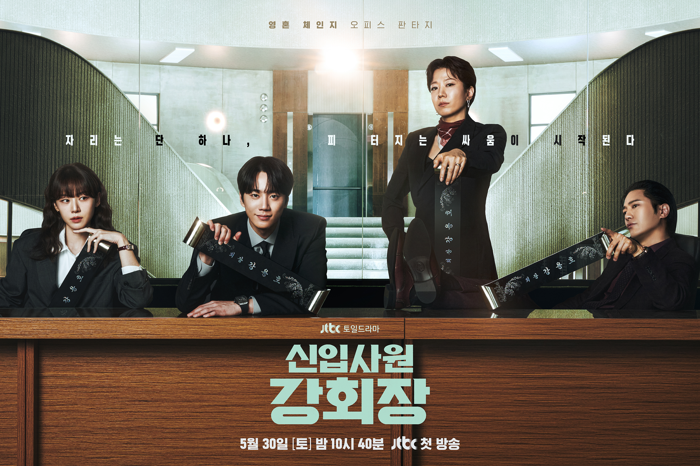

<신입사원 강회장> 포스터 이미지
(제공: SLL)
Q. 예능 조연출로 시작해 영화 <하얀 차를 탄 여자>로 연출 데뷔를 했고, 올해 <신입사원 강회장>으로 첫 드라마 메인 연출을 맡았다. 특히 <하얀 차를 탄 여자>는 단막극으로 기획됐다가 영화로 관객을 만났는데, 같은 이야기가 매체를 옮겨 다른 수용자를 만나게 되었을 때 연출자로서 무엇이 달라졌는가.
(고) 가장 크게 느낀 점은 매체에 따라서 수용자가 어떤 마음가짐으로 소비하는가가 굉장히 차이가 있다는 것이다. <하얀 차를 탄 여자>는 처음에 TV 채널용 단막극으로 만들었던 작품이라 가정에서 시청자들이 채널을 돌리면서 볼 수도 있기 때문에 방해 요소들이 많을 수 있다고 보았다. 그래서 저의 목표는 최대한 시청자들을 자리에 앉히고, 리모컨을 내려놓고 이 콘텐츠에 집중해서 보게 하는 것이었다. 초반에 빨리 질문을 던져야 했고, 시각적으로도 이해가 쉬워야 했으며, 지루한 순간이 없어야 했다. 거기다 배우분들 연기도 너무 좋았고, 이야기도 영화적이어서 영화제에 출품한 것이다. 그런데 처음으로 영화관에서 큰 화면으로 보니 시청자를 잡아놓기 위해서 썼던 기교들이 너무 적나라하게 보여서 되게 부끄러웠다. 왜 그랬나 생각을 해보니 영화를 보러 오는 관객은 그 시간을 위해서 표를 샀고, 영화관에서 ‘이거를 볼 거야’, ‘이 이야기를 온 마음으로 소비할 거야’라고 오신 분들이라 제가 그 자리에 굳이 앉히려고 하지 않아도 되는데, 너무 많은 것을 하려고 그러더라. 그게 굉장히 과하게 느껴졌을 때도 있고. 그래서 수용자의 마음가짐에 따라서, 거기에 맞는 연출법과 촬영법이 따로 있다는 것을 이 작품을 계기로 크게 배웠던 것 같다.
대신 제가 생각했을 때 이 작품이 드라마로서도 좋았던 이유는 ‘좋은 이야기’에 있었고, 그게 영화로 바뀌어도 좋은 이야기의 구조와 캐릭터와 서사는 변하지 않는다는 걸 배우기도 했다.
Q. 올해 연출한 <신입사원 강회장>은 웹소설과 웹툰으로 이미 팬층이 있는 IP였다. 원작 독자와 드라마로 처음 만나는 시청자 사이에서, 연출자로서 무엇을 기준으로 균형을 잡았는가? 캐스팅이나 톤, 장면 구성 등 연출 과정에서 특별히 수용자를 고려한 부분이 있었는가.
(고) 제가 세웠던 기조는 원작을 몰라도 재밌고, 알고 보면 더 재미있었으면 좋겠다는 것이었다. 그리고 원작 팬분들이 원작을 좋아하는 이유가 뭘까에 대해서 고민을 많이 했던 것 같다. 원작의 톤이나 구체적인 장면, 대사를 좋아하는 마음보다는 어떤 부분을 재미있게 볼까 고민해 보니, 흔히 말하는 ‘사이다’ 같은 쾌감이라는 생각이 들었다. 우리의 히어로가 뭔가를 깨부수고, 빌런들을 물리치는 이런 쾌감이 제일 중요하다고 생각했기 때문에 그 구조를 유지하기 위해 노력했다. 그래서 그 쾌감을 잃지 않는 구조 속에서 제가 더 할 수 있는 연출적인 에너지 그리고 리듬감 같은 것들을 추가하려고 했던 것 같다. 그렇다고 이런 의도가 캐스팅에 영향을 미치지는 않았다. 글에 있는 캐릭터를 어떤 배우가 했을 때 제일 멋있게 소화하실 수 있을까를 주로 고민했다.
Q. <신입사원 강회장>은 <재벌집 막내아들>과 원작자가 같고 전작과 세계관을 공유하고 있는데, 이런 점들이 연출에도 영향을 미쳤는가.
(고) 새로운 눈으로 이 작품을 바라보고 싶었고, 크리에이터로서 이미 존재하는 원작에 영향을 받고 싶지는 않았던 것 같다. <신입사원 강회장> 제작 발표회 때도 <재벌집 막내아들>과 원작 작가님이 같아서 부담감이 없냐는 질문이 많았었다. 그런데 저는 원작이 있는 게 오히려 안정감으로 다가와서 좋았다. 이미 한 번 검증된 대중성이 있어서 뭔가 든든한 뒷배가 있는 것 같은 느낌이었다. 당시 제작 발표 때도 마치 제가 마블 시네마틱 유니버스(MCU)에 들어가는 것처럼 나도 좋은 작품으로 그 세계관을 더하고 싶다는 느낌이라고 말했었다. 저는 어떻게 하면 좀 더 다른 레퍼런스를 찾을 수 있을까를 굳이 생각하지 않았다. 왜냐하면 이 작품에 대한 저만의 어떤 유니크함과 새로운 시각이 있을 것 같아서다.
Q. 이제는 국내에서도 원작이 있는 작품을 기반으로 드라마를 제작하는 사례가 제법 많아진 것 같다. 원작이 있는 작품과 드라마 오리지널 작품을 연출할 때, 작품에 임하는 태도나 방식에 차이가 있는지 궁금하다.
(고) 원작은 검증된 어떤 지도나 설계도 같은 게 있는 느낌이라서 안심을 하고 들어가지만 동시에 내가 과연 어떤 걸 추가할 수 있을까라는 고민이 좀 더 큰 것 같다. 그런데 또 이 원작에서 어떤 걸 덜어내고 어떤 걸 강조할까 하는 이런 고민이 더 재미있기도 하다. 반면에 오리지널 작품은 어쨌든 제가 가지고 있던 그림으로부터 시작해서 작가님과 회의를 하고 대본을 만드는 경험을 해보니, 또 그 과정 안에서는 저희 둘만 재밌는 거 아닐까 하는 질문을 끊임없이 하게 된다. 원작이 있는 작품에서는 하지 않던 고민이다. 그런데 그 상황에서 어느 정도 적정 수준에 도달했을 때 저희가 ‘이거는 재미있어’라고 생각을 한다면 감독으로서 크리에이터로서 그 현장에 있는 누구보다 더 깊은 이해도를 가지고 들어가는 것이기 때문에 그런 면에서는 오리지널 작품이 크리에이터로서 조금 더 확신을 가지고 일할 수 있는 것 같다.
말하자면 원작은 원작 팬분들이 좋아할까에 대한 고민이 있다면, 오리지널은 내가 좋다고 생각하는 이 이야기가 ‘모두에게 통할까’라는 조금 다른 고민이 있는 것 같다.
Q. 원천 IP 기반 드라마가 늘면서 검증된 IP에만 투자가 몰린다는 우려도 있다. 창작 현장에서 이 흐름을 어떻게 느끼는가? 오리지널 기획이 설 자리에 대해 어떻게 생각하는지도 궁금하다.
(고) 대중성과 흥행이 불확실한 상황에서 원작 IP가 있는 콘텐츠들이 빌트인처럼 약간의 보증을 가지고 출발한다는 점에서 투자가 왜 그쪽으로 쏠리는지 너무 이해가 된다. 하지만 다시 생각해보면 그 검증된 IP도 각색이 되기 전에는 오리지널이었던 순간이 있었다. 그런데 이 사실을 다들 간과하고 있는 것 같다.
어쨌든 요즘은 예산 규모가 커지면서 리스크를 감수하기가 더 어려워졌다. 그래서 저는 오리지널이 꼭 대규모의 롱폼 드라마가 아니어도, 단막극이나 저예산 영화나 숏폼이나 미드폼과 같은 방식으로 더 많이 제작되어야 하지 않을까 생각한다. 그러면서 계속 오리지널을 발굴해내는 과정이 중요할 텐데, 그런 면에 있어서 조금 더 지원이 있었으면 좋겠다.
작은 오리지널들이 설 무대가 있어야 하는데, 그 무대들이 어떻게 보면 다양한 포맷과 플랫폼이 늘어나면서 많아지기는 했지만 지원이나 인식은 아직 부족한 것 같다. 우리가 파이프라인을 만들 때, 롱폼은 리스크를 떠안기에 너무 제작비 규모가 크기 때문에 힘들지만 흥행 부담이 상대적으로 적은 작은 규모는 가능하다고 본다. 어쨌든 우리는 새로운 탤런트가 계속 필요하고 시청자들을 발굴해야 되기 때문에 그런 파이프라인을 만들어보는 것이 필요하다고 본다.
Q. 몰아보기, 배속 시청, 숏폼 클립 소비처럼 시청 방식이 과거와는 크게 달라졌다. 이런 변화가 이야기를 만드는 방식에 실제로 영향을 주고 있는가.
(고) 촬영 현장에서는 그런 부분을 염두에 두지 않았다. 대신 편집하는 과정에서 생각을 많이 했던 것 같다. 수용자의 호흡이 점점 빨라지고 있다는 생각이 들다 보니 편집을 했을 때 OTT나 어떤 플랫폼에서 볼 때 배속을 누를 필요성을 못 느낄 정도로 지루함이 없어야 한다는 게 가장 큰 목표였다. 배속을 누를 필요가 없을 만큼의 호흡과 속도감과 리듬감을 가져가고 싶었다. 이번 <신입사원 강회장> 시청자들 피드백에 전개가 빠르다는 말씀이 있어서 그 부분은 성공했다고 생각한다. 편집을 하면서 어떻게 1분 단위로 클립을 잘라서 유튜브에 공개를 할 것이며, 어떤 부분을 선공개할까에 대해서도 내부에서 대화를 나눈다. 특히 후반 작업을 하면서 그런 부분에 대해 고민을 많이 하는 것 같다.
Q. 드라마는 사전 제작으로 진행되었는가, 아니면 실시간으로 제작되었는가. 이에 따라 시청자 댓글에 대한 제작진의 대응도 달라질 수 있을 것 같다.
(고) <신입사원 강회장>은 거의 사전 제작이나 마찬가지였다. 첫 번째 방송이 나가기 전에는 거의 모든 회가 편집이 끝나 있는 상황이었다. 다만, 마지막 2~3회차 정도가 첫 방 나가고 나서도 조금 작업을 했다.
당시에 거의 주말마다 잠을 못 이룰 정도로 시청자 반응과 댓글을 많이 봤다. 초반에 반응이 좋다 보니까 더더욱 못 내려놨던 것 같기도 하다. 하지만 반응을 보고 편집에 반영할 수 있는 정도의 스케줄은 아니었는데. 그래서 사실 시청자 반응을 반영하지 못하는 것에 대한 답답함도 당연히 있었다. 이런 반응일 줄 알았으면 조금 다르게 했을 텐데 하는 아쉬움이 있었다.
반면에 이미 제작을 완결한 상태에서 저의 연출적인 선택들이나 이야기적인 선택들에 대해 바로 칭찬과 꾸짖음을 받을 수 있고, 정확하게 심판을 받을 수 있는 것 같아서 오히려 어떤 면에서 더 좋은 배움의 기회가 되지 않았나 하는 생각이 든다.
대신 마지막 회에 이를수록 시청자분들이 좋아해 주셨던 부분들이나 음악에 대해서는 편집에서 강조를 할 수는 있었다. 그렇다고 이야기의 흐름을 바꿀 수 있는 정도는 아니었지만.
Q. 연출하는 입장에서 실시간으로 시청자들의 반응을 확인할 수 있는 현재의 시스템에 대해 어떻게 생각하는가.
(고) 장단점이 명확하게 있다고 생각하는데, 저에게는 장점이 더 컸다. 물론 재미있게 봐주셔서 더 그랬겠지만, 팬분들과 제가 직접 소통할 수 있는 창구가 있다는 것 자체가 희열이 컸다. 앞서 <하얀 차를 탄 여자>를 영화제에 출품하면서 GV(관객과의 대화)를 했던 것은 사실 드라마 PD로서는 할 수 없는 경험이기도 하다. 방금 본 나의 어떤 이야기에 대해서 바로 대화를 나눌 수 있고, 질문을 직접 받고, 그 질문에 대해서 제가 뒷이야기도 할 수 있고. 근데 그게 드라마 PD로서는 사실 기회가 많지 않다. 저 같은 경우는 제 개인 SNS로 대화를 하려고 했던 편이다. 그런 것에서 재미를 많이 느꼈던 것 같다. 그래서 드라마 크리에이터들에게도 GV 같은 이벤트들이 생기면 좋겠다는 생각을 했다. 드라마도 크리에이터와 시청자들이 직접 만날 수 있는 장들이 더 생기면 좋겠다.
Q. 시청 데이터와 지표가 점점 정교해지고 있다. 데이터가 말해주는 수용자와 창작자가 직관으로 느끼는 수용자 사이에 간극을 느낀 적이 있는가.
(고) <신입사원 강회장>을 방영할 당시 제가 생각했던 것보다도 시청률 수치가 너무 빠르게 올라가서 놀랐다. 오히려 시청률 수치가 제 주변 반응에 비해 앞서가는 느낌이었다. 체감하는 반응이 수치를 살짝 뒤따라오기는 했지만 거의 비슷했다. 시청률이 10%, 12% 이렇게 넘어가는 순간을 저도 피부로 느낄 수 있는 부분이어서 오히려 데이터와 수치에 대한 개인적인 신뢰가 생겼던 것 같다.
그런데 시청률 데이터가 시청자가 어떤 포인트에서 제일 많이 보고, 어떤 포인트에서 빠졌는지는 알려주지만 왜 빠지셨는지, 왜 그 부분이 최고 시청률이 나왔는지에 대해서는 알려주지 못한다. 그 부분을 지금은 스스로 판단해야 하고, 당연히 제 몫이지만 데이터가 그 부분도 알려줄 수 있으면 좋겠다는 생각이 들었다. 동시에 어떤 작품은 수치가 그 작품의 완성도나 사람들이 얼마나 좋아했는지를 꼭 알려주는 것은 아닌 것 같아서 시청 데이터만으로 작품의 성공 여부를 따질 수만은 없겠구나 하는 생각이 들었다.
Q. 연출하는 입장에서 수용자들이 내 작품을 어떻게 생각하는지를 가장 잘 나타내는 지표는 무엇이라고 보는지 궁금하다.
(고) 개인적으로는 화제성이라고 본다. <신입사원 강회장> 같은 경우는 시청률과 화제성이 비슷하게 맞물려 갔지만 모든 드라마가 그렇지는 않다고 생각한다. 지금 시대에는 화제성이 더 와닿는다고 생각을 하는 이유는 이제는 본방을 볼 수 있는 분들이 많지 않고, 그런 필요성도 못 느끼는 것 같다. 그래서 이번에도 당연히 VOD를 많이 보실 거라고 생각을 했는데 본방 시청률이 잘 나와서 놀랐다. 그래도 화제성을 더 중요하게 생각한 것 같다.
Q. 영화는 관객이 작품을 선택해서 영화관에 오고, TV나 OTT 시청자는 언제든 떠날 수 있다. 연출하는 입장에서 수용자가 누구냐에 따라서, 혹은 어떤 플랫폼을 통해서 만나느냐에 따라서 연출을 달리해야 하나 하는 고민도 있을 것 같다.
(고) 그렇다. 단막극 <하얀 차를 탄 여자>를 영화용으로 재편집하면서 들었던 생각이 드라마와 영화 연출의 고민의 지점이 다르다는 것이었다. 영화는 2시간에 걸친 기승전결이 있고, 처음부터 끝까지 이야기를 제 머릿속에 가져갈 수 있다고 생각이 들었다. 반면에 드라마는 1시간마다 기승전결이 있어야 하고, 동시에 12시간 안에서의 큰 기승전결도 있어야 한다. 게다가 매 한 시간이 끝날 때마다 다음 한 시간을 보고 싶게 만들어야 할 후크의 의무도 있다. 그런 면에서 영화보다 드라마가 조금 더 시청자를 끊임없이 놓치지 않으려는 노력이 필요하고, 그래서 연출적으로 더 힘이 들어갈 수밖에 없구나 하는 생각을 했다.
그리고 드라마는 어쨌든 처음으로 만족시키고 즐거움을 드려야 하는 분들은 본방으로 시청하시는 분들이기 때문에 후반 작업이나 연출의 호흡에 더 포커스를 주었다.
Q. 글로벌 OTT를 통해 해외 수용자를 만날 가능성이 예전보다 커졌다. 국내 시청자와 해외 시청자를 동시에 염두에 두는 일은 연출자에게 어떤 고민을 안기는가?
(고) 가끔 K-드라마 좋아하시는 분들이 투어를 오시는데, 거기에 게스트로 초청을 받아 함께 대화를 나눈 적이 있다. 그들이 항상 하는 말은 ‘K-드라마는 한국적이기 때문에 좋다’라는 것이다. 글로벌 OTT로 오히려 로컬한 색이 후퇴한다고 느끼는 것 같았다. 그래서 오히려 한국적인 디테일들이 글로벌에서 더 통하고, 그게 우리 콘텐츠의 힘이구나 하는 생각이 들었다.
하지만 저도 어쩔 수 없이 해외 시청자들이 보기에 흔히 말하는 PC함(정치적 올바름)은 조금 고민을 하는 편인 것 같다. 글로벌 시청자들이 봤을 때 불쾌함은 느끼지 않을 수준이 어느 정도인가를 크리에이터로서 생각을 하면서 만들어야 한다고 생각한다. 우리 문화의 보편적인 유머나 문화 코드 같은 게 있을 수 있는데, 그게 글로벌적으로 보편적인 것인가, 혹은 그렇지 않은가를 살펴보는 것은 중요한 것 같다. 적어도 다른 문화권 사람들이 봤을 때 불쾌함을 유발해서는 안 된다. 그렇다면 ‘굳이 이게 필요할까’라는 고민을 하게 되는 것 같다. 그동안 우리 사회에 다문화 구성원이 많지 않다 보니 그러한 대화를 나눌 필요성을 못 느꼈을 수도 있는데, 이제는 글로벌에서 정말 많은 시청자를 만나기 때문에 크리에이터로서는 PC함에 대한 인지와 교육과 대화가 점점 많이 필요하다는 생각이 든다.
Q. 지금의 플랫폼 환경이 크리에이터가 수용자를 만날 기회가 넓어졌다고 생각하는 경우도 있지만, 다른 한편으로는 오히려 경쟁이 치열해져서 진입장벽이 높아졌다고 생각하는 의견도 있다. 연출하는 입장에서는 어떤 생각을 하고 있는가.
(고) 수용자를 만날 수 있는 포맷과 방법이 많아질수록 누구나 연출자가 될 수 있고, 작가가 될 수 있고, 배우가 될 수 있어서 등용문이 넓어진 건 맞다고 생각한다. 이제는 더 이상 공채를 통과해야만 PD가 될 수 있는 시대는 아니다. 파이프라인이 많아져서 어떻게 보면 더 다양한 콘텐츠를 볼 수 있는 시대가 됐다.
신인 감독으로서 드는 생각은 이젠 정말 저의 유니크함과 매력, 그리고 저의 개성과 아이디어로 승부를 해야 되기 때문에 더 부담이 오는 건 맞다. 실력으로 경쟁할 수밖에 없는 것이다. 끊임없이 시청자의 눈을 더 많이 뺏어와야 하는 점유율 싸움이기도 해서 더 그렇게 느껴진다. 콘텐츠를 볼 수 있는 창구가 많아졌음에도 불구하고 크리에이터가 더 돋보일 수 있는 기회는 힘들어지고, 워낙 볼 수 있는 콘텐츠들이 많다 보니 사람들이 이 콘텐츠를 보게 하기까지의 과정도 더 어려워진 것 같다. 제가 하는 이야기를 내놓기는 더 쉬워졌지만, 제가 내놓은 이야기를 얼마나 많은 분들이 보시는가의 문제는 이제 제 손 밖으로 나갔다고 본다.
Q. 다양한 포맷이 등장하고 있다고 언급해 주셨는데, 올해 숏드라마가 성장을 많이 했다. 연출하시는 입장에서 숏드라마를 어떻게 보는가.
(고) 할 수 있다면 해보고 싶다. 숏드라마는 마치 다른 언어를 배우는 것 같다는 생각이 든다. 연출이나 촬영이 다른 문법 같다. 그리고 한 가지만 고집할 필요가 없다고 생각한다. 결국 제가 감독이나 크리에이터가 되고 싶었던 이유는 이야기를 하는 게 재미있고 좋은 이야기를 전달하고 싶었기 때문이다. 그게 어떤 포맷이든 배울 기회가 있다면 언제든지 배우고 도전하고 싶다.
그리고 점점 릴스나 숏폼처럼 짧은 콘텐츠가 인기가 많아질수록 수용자가 익숙해지는 호흡도 달라진다고 생각한다. 그래서 제가 드라마를 만들 때도 시청자의 호흡이 점점 짧아지면 롱폼 드라마를 볼 때 지루함을 느낄 수 있다고 생각한다. 그럼 ‘왜 레거시 미디어 드라마는 계속 드라마다운 호흡을 고집해야 할까’라고 고민을 했을 때, 개인적으로 빠른 호흡을 좋아하기도 하고 어쨌든 예능 조연출도 했다 보니 빠른 속도를 좋아해서이기도 하지만, 수용자의 빨라진 호흡에 맞춰보는 노력도 재미있다고 생각한다. 그리고 수용자들이 많이 보는 콘텐츠를 알아야 롱폼 드라마도 진화할 수 있고, 약간의 변화를 같이 가져갈 수 있다고 생각한다. 이제는 만드는 사람들도 스스로가 활동할 수 있는 포맷의 범위를 넓혀야 할 필요가 있다고 생각한다.
Q. 창작자가 수용자를 더 잘 만날 수 있도록 업계나 공공 영역이 뒷받침해 주었으면 하는 부분은 무엇이라고 보는가.
(고) 최근 중편이나 단편, 단막극이 많이 없어졌다. 이 부분에 대한 지원이 필요하다고 생각한다. 예를 들면 예전에는 방송사마다 단막극 편성 띠가 있었다. 정책적인 입장에서 신인 탤런트를 발굴하겠다는 목적을 가지고 이런 편성을 지원해 주면 좋겠다. 그게 공영방송이 될 수도 있고 영화관이 될 수도 있다. 플랫폼은 어디든지 될 수 있다. 예를 들어서 1년에 며칠은 정부에서 지원하는 콘텐츠를 상영하는 것이다. 그러면 시청자들이 무료로 보러 올 수도 있고, TV로 송출되면 시청할 수도 있다.
현재의 제작지원도 좋지만 아예 콘텐츠가 시청자들에게 선보일 수 있도록 그 무대 자체를 만들어 주는 것이 필요하다. 기획하는 입장에서 금전적으로 지원을 받을 때도 좋지만 그게 꼭 시청자를 만날 수 있다는 보장은 없다. 그래서 정책적으로 그 창구를 만들어 주는 게 더 좋지 않을까 생각한다. 그렇게 된다면 관객을 직접적으로 만날 수 없는 크리에이터들이 수용자들을 만나서 그들의 이야기를 직접 듣고 피드백을 받을 수 있는 창이 생길 수 있다고 생각한다.
이미 ‘대한민국 콘텐츠 대상’과 같은 공모전이 있지만, 만들어지는 스토리가 확실히 시청자를 만날 수 있느냐는 미지수인 것 같다. 그래도 영화는 배급까지의 파이프라인이 조금 더 명확하니까 관객을 만날 수 있는 가능성이 있는 것 같은데 드라마는, 특히 신인이, 시청자를 만날 기회를 갖는 것은 더 어렵다고 생각한다. 아예 그런 무대를 만들어 주면 신인 입장에서 조금 더 희망이 생기지 않을까 싶다는 생각이 든다.
물론 지금은 숏폼도 있고, 유튜브도 있어서 신인 연출자나 신인 배우가 수용자들을 만날 수 있는 창구가 굉장히 늘었다고 할 수 있다. 그런데 어쨌든 거기까지 가려면 또 자본이 필요하다. 레거시 미디어가 가지고 있는 롱폼이나 OTT 시리즈를 꿈꾸는 신인의 입장에서는 등용문의 문턱이 오히려 더 높아지지 않았나 하는 생각도 든다. 플랫폼이 늘어서 대형 작품들은 더 많아지고 제작 규모가 더 커지다 보니 신인들이 스스로를 증명해야 할 것이 많아졌는데 그 증명을 하는 과정에서 정책적인 지원을 받을 수 있다면 좋겠다.